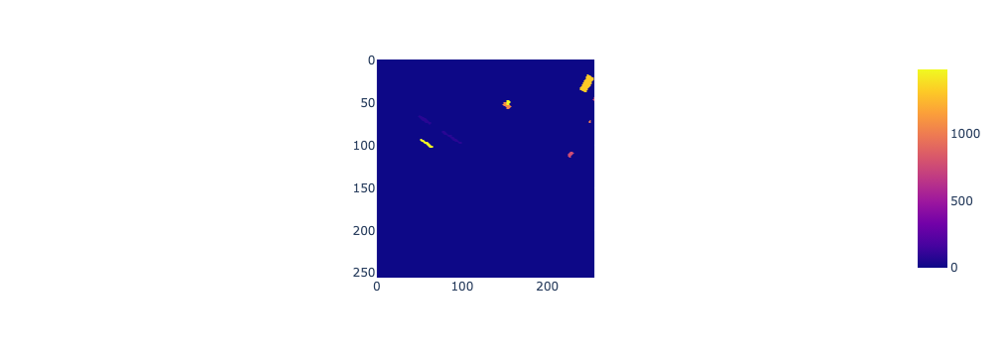
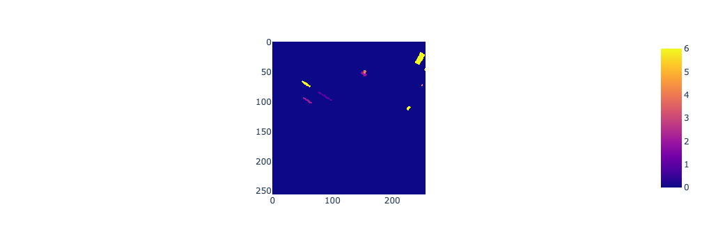
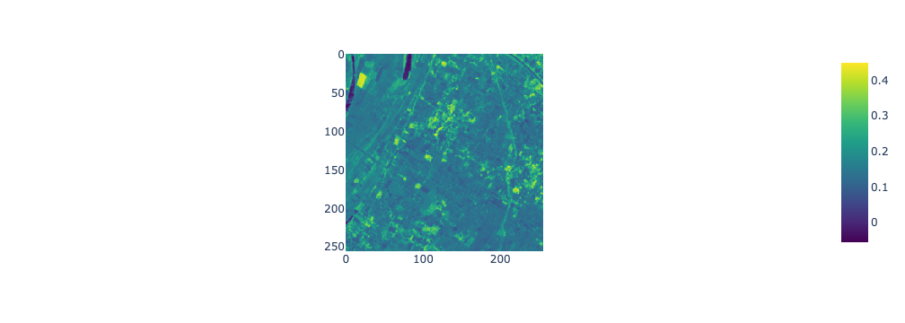

Often, datasets need to go through a series of data wrangling and transformation steps before they are ready for analysis or visualisation tasks. This lab will demonstrate several data wrangling and transformation operations for raster, vector, and tabular data.
We will start with a subset of the AgriFieldNet Competition Dataset (Radiant Earth Foundation and IDinsight, 2022) which has been published to encourage people to develop machine learning models that classify a field’s crop type from satellite images. This dataset consists of a series of directories with each directory corresponding to a 256 x 256 pixel image footprint. Inside each directory are the following files:
12 GeoTIFF files corresponding to spectral reflectance in different wavelengths from Sentinel-2 data.
1 GeoTIFF file with non-zero pixels corresponding to a crop type label.
1 GeoTIFF file with non-zero pixels corresponding to a field id.
1 JSON metadata file.
This data is subset from a larger dataset covering agricultural fields in four Indian states of Odisha, Uttar Pradesh, Bihar, and Rajasthan. The field boundaries and crop type labels were captured by data collectors from IDinsights Data on Demand team and the satellite image preparation was undertaken by the Radiant Earth Foundation.
Our task is to combine all the raster data in separate directories into a tabular dataset that can be used for machine learning tasks to predict a field’s crop type. Specifically, we will transform a disparate collection of GeoTiff files spread across many directories and storing different information into a tabular dataset with columns for each field id, crop type, and average spectral reflectance values in each field for many wavelenghts. We will also store geometry data representing the location of each field in a geometry column.
Through completing this task you will use programming skills from week 1, build on your understanding of directories and file systems from week 2, and tools for data cleaning covered in week 3. You will build on these skills by learning a range of common data wrangling and transformation operations which you will be able to apply to a range of datasets to wrangle them into a structure suitable for analysis and visualisation. You will also learn how to use Python to create an automated data transformation routine consisting of several operations to automate the processing of a collection of datasets into a format ready for analysis.
Data import was covered in week 2 with examples of how to read tabular, vector, and raster data into Python programs.
Data cleaning
Data cleaning was covered in week 3 as part of the exploratory data analysis with examples of how to handle outliers and missing data.
Data transformation
McKinney (2022) define data transformation as the application of mathematical or statistical operations to data to generate new datasets. Data transformation can also include operations that reshape datasets or combine two or more datasets.
As we’re working with spatial and non-spatial data we can categorise data transformation operations as attribute operations, spatial operations, geometry operations, and raster-vector operations (Lovelace et al. (2022)).
Attribute operations are applied to non-spatial (attribute data). This could be a tabular dataset without any spatial information, the attribute table of a vector dataset, or the pixel values of a raster dataset. Common attribute operations include:
Selecting columns from a table based on a condition.
Selecting (subsetting) pixels from a raster based on a condition.
Filtering rows from a table based on a condition.
Creating a new column of values using a function applied to existing data.
Computing summary statistics of columns in a table or of pixel values in a raster.
Joining datasets based on matching values in columns (keys).
Spatial operations transform data using the data’s geographic information including shape and location. Vector spatial operations include:
Spatial subsetting by selecting data points based on a geographic condition (e.g. selecting all fields in Western Australia).
Spatial joins where datasets are combined based on their relationship in space.
Spatial aggregation where summaries are produced for regions (e.g. the average crop yield for all fields in a region).
Spatial operations on raster data are based on map algebra concepts and include:
Local operations which are applied on a pixel by pixel basis (e.g. converting a raster of temperature values in °F to °C).
Focal operations which summarise or transform a raster value using the values of neihbouring pixels (e.g. computing the average value within a 3 x 3 pixel moving window).
Zonal operations which summarise or transform raster values using values inside an irregular shaped zone.
Global operations which summarise the entire raster (e.g. computing the minimum value in the raster dataset).
Geometry operations transform a dataset’s geographic information. Common geometry operations for vector data include:
Simplification of shapes.
Computing the centroid of polygons.
Clipping (subsetting) of geometries based on their intersection or relationship with another geometry.
and geometry operations on raster data typically involve changing the spatial resolution and include:
Aggregation or dissagregation.
Resampling
Raster-vector operations involve both raster and vector datasets and include:
Cropping or masking raster data using a vector geometry.
Extracting raster values that intersect with a vector geometry.
Rasterisation where a vector dataset is transformed to a raster layer.
Vectorisation where a raster dataset is transformed to a vector layer.
Feature engineering
Feature engineering is part of a machine learning workflow which involves preparing and preprocessing datasets ready for machine learning model training and evaluation. Feature engineering is one example where data wrangling operations are applied. This lab can be considered a feature engineering task where a range of raster satellite image datasets are transformed to a vector-tabular dataset which can be used to train and test a machine learning model. Often, datasets for machine learning computer vision tasks (e.g. see the datasets on Radiant Earth’s MLHub) are provided with data samples for model development spread across many sub-directories. Prior to model training you need to extract the data from these directories and assemble it in a way that it can be passed into a model. You can use this lab as a starter template for these kind of feature engineering tasks.
Setup
Run the labs
You can run the labs locally on your machine or you can use cloud environments provided by Google Colab or Binderhub. If you’re working with Google Colab and Binderhub be aware that your sessions are temporary and you’ll need to take care to save, backup, and download your work.
Download data
If you need to download the data for this lab, run the following code snippet.
If you’re working in Google Colab, you’ll need to uncomment and run the following code snippet to install the required packages that don’t come with the colab environment.
## UNCOMMENT BELOW IF WORKING IN GOOGLE COLAB ### !pip install geopandas# !pip install pyarrow# !pip install mapclassify# !pip install rasterio#!pip install libpysal#!pip install esda#!pip install splot
Import modules
# Import modulesimport osimport pandas as pdimport geopandas as gpdimport plotly.express as pximport numpy as npimport matplotlib.pyplot as pltimport rasterioimport plotly.io as pioimport shapely.geometryimport pprintfrom rasterio import features
Setup renderer
Uncomment the relevant line depending on whether you are working in Google Colab or Jupyterlab.
In week 2 we showed that files are organised within a hierarchy of directories and sub-directories (or folders) in a computer system. Each sample (256 x 256 pixel image) is stored in its own sub-directory. We can explore the structure of these directories and how files are arranged within it.
First, let’s list the first level of sub-directories within the week-4 folder. Each of these sub-directories corresponds to a 256 x 256 pixel image.
To recap, we can use functions provided by the os package to help us explore directories. The os.path.join() function takes a sequence of string data representing directory names or file names and combines them into a path. The os.listdir() function lists all files or sub-directories in a directory pointed to by a path.
# Load the image and labels datadata_path = os.path.join(os.getcwd(), "week-4", "images")image_dirs = os.listdir(data_path)for i in image_dirs:if i !=".DS_Store":print(i)if".DS_Store"in image_dirs: image_dirs.remove(".DS_Store")
The os.listdir() function lists files or directories at the first level of the directory passed into the function as an argument. However, often we have nested directory structures consisting of a hierarchy of sub-directories and files. The os.walk() can be used to traverse a directory tree. We can use the os.walk() function to fully reveal how the files are arranged within a sub-directory.
We can see that within each sub-directory corresponding to a 256 x 256 pixel image footprint there are the following files and sub-directories:
Files with the names B*.tif which are Sentinel-2 images for a particular waveband. For example, B02.tif is Sentinel-2 reflectance in the blue visible wavelength. These files will be used to generate predictor variables in a subsequent machine learning task to predict crop type.
A field sub-directory which contains a field_ids.tif file. This file stores field ids as pixel values.
A label sub-directory which contains a raster_labels.tif file. This file stores a numeric indicator of crop type as pixel values. These files store target labels used to train and test a machine learning model that predicts crop type from spectral reflectance data.
for root, dirs, files in os.walk(os.path.join(data_path, image_dirs[1]), topdown=True):print(root)for f in files:print(f" {f}")
Let’s quickly visualise some of this data to get an idea of its structure. First, let’s visualise the Sentinel-2 satellite image data starting with the image storing reflectance in the green visible portion of the electromagnetic spectrum.
We can see that the image shape is 256 x 256 pixels.
# path to the green band GeoTIFF files2_green_path = os.path.join(os.getcwd(), "week-4", "images", image_dirs[1], "B03.tif")# open the green band GeoTIFF file and read its image datawith rasterio.open(s2_green_path) as src: green_band = src.read(1)print(f"the shape of the image is {green_band.shape}")# plot the green bandpx.imshow(green_band, color_continuous_scale="Greens")
the shape of the image is (256, 256)
Let’s also create a true colour composite image using the red, green, and blue band images.
# path to the red band GeoTIFF files2_red_path = os.path.join(os.getcwd(), "week-4", "images", image_dirs[1], "B04.tif")# open the red band GeoTIFF file and read its image datawith rasterio.open(s2_red_path) as src: red_band = src.read()# path to the green band GeoTIFF files2_green_path = os.path.join(os.getcwd(), "week-4", "images", image_dirs[1], "B03.tif")# open the green band GeoTIFF file and read its image datawith rasterio.open(s2_green_path) as src: green_band = src.read()# path to the blue band GeoTIFF files2_blue_path = os.path.join(os.getcwd(), "week-4", "images", image_dirs[1], "B02.tif")# open the blue band GeoTIFF file and read its image datawith rasterio.open(s2_blue_path) as src: blue_band = src.read()# make RGB imagergb = np.concatenate((red_band, green_band, blue_band), axis=0)# plot the rgb imagepx.imshow(np.moveaxis(rgb, 0, 2), contrast_rescaling="minmax")
Now, let’s explore the field id images. We can see that the image contains a few fields with ids assigned to them. Hover over each field and you can see its numeric id value. However, we can also see that a large portion of the image is covered by pixels with the value 0. These locations are not labelled fields and we will need to drop them from our dataset.
# path to the GeoTIFF filefield_id_path = os.path.join(os.getcwd(), "week-4", "images", image_dirs[1], "field/field_ids.tif")# open the GeoTIFF file and read its image datawith rasterio.open(field_id_path) as src: field_id_band = src.read(1)# plot the field id bandpx.imshow(field_id_band)

Finally, we can look at our labels image. Each field’s pixels are assigned a numeric value that corresponds to a crop type. Based on the dataset’s documentation the below is the mapping between numeric values and crop types in the labels dataset.
1 - Wheat
2 - Mustard
3 - Lentil
4 - No crop/Fallow
5 - Green pea
6 - Sugarcane
8 - Garlic
9 - Maize
13 - Gram
14 - Coriander
15 - Potato
16 - Bersem
36 - Rice
# path to the GeoTIFF filelabel_path = os.path.join(os.getcwd(), "week-4", "images", image_dirs[1], "label/raster_labels.tif")# open the GeoTIFF file and read its metadata and image datawith rasterio.open(label_path) as src: meta = src.meta label_band = src.read(1)# Plot the crop label bandpx.imshow(label_band)

Raster data processing
NumPy refresher
In week 2 we introduced NumPy ndarray objects for storing multidimensional (or N-dimensional) arrays which consist of a grid of elements of the same data type. ndarray objects are a logical data structure for representing and manipulating raster and image data in Python programs.
The dimensions of a NumPy ndarray are called axes. A single band raster layer would have two axes, rows would be arranged along the 0th axis and columns along the 1st axis. The shape of an ndarray refers to the number of elements along each axis.
Let’s quickly revise these concepts by working with a raster layer with 3 rows and 3 columns.
This ndarray object should have 2 axes corresponding to rows (0 axis) and columns (1 axis) with 3 elements along each axis.
print(f"the shape of demo_raster is {demo_raster.shape}")print(f"the number of elements on the 0 axis (rows) is {demo_raster.shape[0]}")print(f"the number of elements on the 1 axis (columns) is {demo_raster.shape[1]}")
the shape of demo_raster is (3, 3)
the number of elements on the 0 axis (rows) is 3
the number of elements on the 1 axis (columns) is 3
Subsetting NumPy ndarrays
This is a form of subsetting opertation where you select values from a NumPy ndarray object based on their index locations. These operations are generally referred to as indexing and slicing when working with NumPy ndarray objects. Lovelace et al. (2022) refer to these operations on raster data as row-column subsetting.
We can extract a value from a NumPy ndarray based on its index location. For example, the first element of a 2-Dimensional ndarray is at location [0, 0] (i.e. the 0th row and 0th column).
We can use the : symbol to specify slices of a NumPy ndarray to subset. For example, the following are three different ways of slicing the first two rows.
Note that the slice is not inclusive of the index location after the : symbol. So, demo_raster[0:2, ] would select the first two rows of demo_raster - row 0 and row 1 (remember Python indexes from 0).
A common data wrangling and combination operation when working with raster data is band stacking. This is the process of taking two or more single band rasters and stacking them to create a multiband raster.
When using NumPy ndarray objects to handle raster data, this process could involve stacking two ndarray objects with a shape of (256, 256) to create a new ndarray object with the shape (2, 256, 256). Here, axis 0 has a length of two which indicates that we’ve stacked two ndarray objects with the shape (256, 256).
We can use the NumPy stack() and concatenate() functions to combine a sequence of ndarrays along an axis.
We can write a short code snippet to start our automated data transformation routine that will loop over image directories and Sentinel-2 bands, read the data stored in GeoTIFF files corresponding to Sentinel-2 reflectance values into an ndarray, and then use NumPy’s stack() function to stack a list of ndarrays representing a multiband raster structure. Let’s break this down step by step:
We loop over our list of directories (named in the list image_dirs) and inside each directory are a series of B*.tif files storing Sentinel-2 reflectance data. The outer loop over directories is:
for i in image_dirs:## When inside this loop i takes on a directory name listed in image_dirsprint(f"stacking Sentinel-2 bands in {i}")
Next, we create an empty list which we’ll use to store ndarray objects of data read from the B*.tif GeoTIFF files. This is defined as bands = [], the [] creates an empty list:
for i in image_dirs:print(f"stacking Sentinel-2 bands in {i}")# a list to store numpy ndarray objects of Sentinel-2 reflectance data for each band bands = []
Now, for each iteration of i, which corresponds to a directory, we iterate over a the B*.tif files inside i and read the data stored in each file into an ndarray and append the ndarray to the bands list using the bands.append(src.read(1)) command.
for i in image_dirs:print(f"stacking Sentinel-2 bands in {i}")# a list to store numpy ndarray objects of Sentinel-2 reflectance data for each band bands = []# loop over each band, read in the data from the corresponding GeoTIFF file into an ndarrayfor b in s2_bands: band_path = os.path.join(os.getcwd(), data_path, i, b +".tif")with rasterio.open(band_path) as src:# append the ndarray storing the Sentinel-2 reflectance data for a band to a list bands.append(src.read(1))
You will notice the use of the context manager denoted by the with block to read data from GeoTIFF files into a NumPy ndarray. This was covered in week 2, but let’s revise this quickly:
with rasterio.open(band_path) as src:
Creates a file object referenced by src which points to the file at the path referenced by band_path (here a GeoTIFF file). The use of the with block as a context manager takes care of closing the connection src when we have finished reading data from the file. The file object src has a read() method which can be used to read data from the file it connects to into our Python program.
src.read(1)
For each B*.tif file in a directory, we read it’s data into our program as:
for b in b2_bands: band_path = os.path.join(os.getcwd(), data_path, i, b +".tif")with rasterio.open(band_path) as src:# append the ndarray storing the Sentinel-2 reflectance data for a band to a list bands.append(src.read(1))
Once we have finished looping over the bands in the directory i, we can stack the ndarray objects in the list bands to form a NumPy ndarray representation of a multiband raster. We do this by passing the list of ndarray objects into the NumPy stack() function.
# loop over image directoriesfor i in image_dirs:print(f"stacking Sentinel-2 bands in {i}")# a list to store numpy ndarray objects of Sentinel-2 reflectance data for each band bands = []# loop over each band, read in the data from the corresponding GeoTIFF file into an ndarrayfor b in s2_bands: band_path = os.path.join(os.getcwd(), data_path, i, b +".tif")with rasterio.open(band_path) as src:# append the ndarray storing the Sentinel-2 reflectance data for a band to a list bands.append(src.read(1))# stack all bands in the list to create a multiband raster bands = np.stack(bands)
Finally, before we more onto the next i (i.e. the next directory in the list image_dirs) and repeat this process, we append our ndarray object of stacked Sentinel-2 bands to the list stacked_bands. When we have finished looping over all directories in image_dirs the list stacked_bands will be a collection of ndarray objects that we can refer to later in our program.
# stacking bands # Sentinel-2 band names s2_bands = ['B01', 'B02', 'B03', 'B04', 'B05', 'B06', 'B07', 'B08', 'B8A', 'B09', 'B11', 'B12']# a list to store numpy ndarray objects representing multiband rasters of Sentinel-2 reflectance datastacked_bands = []# loop over image directoriesfor i in image_dirs:print(f"stacking Sentinel-2 bands in {i}")# a list to store numpy ndarray objects of Sentinel-2 reflectance data for each band bands = []# loop over each band, read in the data from the corresponding GeoTIFF file into an ndarrayfor b in s2_bands: band_path = os.path.join(os.getcwd(), data_path, i, b +".tif")with rasterio.open(band_path) as src:# append the ndarray storing the Sentinel-2 reflectance data for a band to a list bands.append(src.read(1))# stack all bands in the list to create a multiband raster bands = np.stack(bands)# append the multiband raster to the list storing multiband rasters for data in each directory stacked_bands.append(bands)
stacking Sentinel-2 bands in ref_agrifieldnet_competition_v1_source_0a1d5
stacking Sentinel-2 bands in ref_agrifieldnet_competition_v1_source_0a664
stacking Sentinel-2 bands in ref_agrifieldnet_competition_v1_source_0a729
stacking Sentinel-2 bands in ref_agrifieldnet_competition_v1_source_0a76e
stacking Sentinel-2 bands in ref_agrifieldnet_competition_v1_source_0aa46
stacking Sentinel-2 bands in ref_agrifieldnet_competition_v1_source_0afb8
stacking Sentinel-2 bands in ref_agrifieldnet_competition_v1_source_0b194
stacking Sentinel-2 bands in ref_agrifieldnet_competition_v1_source_0b1c5
stacking Sentinel-2 bands in ref_agrifieldnet_competition_v1_source_0b41f
stacking Sentinel-2 bands in ref_agrifieldnet_competition_v1_source_0b89a
Let’s inspect the output of the band stacking workflow. The list stacked_bands should be a list of ndarray objects with rank 3. Each ndarray object should have three axes (bands, rows, columns).
idx =0for i in stacked_bands:print(f"the shape of the ndarray at position {idx} in stacked_bands is {i.shape} with rank {len(i.shape)}") idx +=1
the shape of the ndarray at position 0 in stacked_bands is (12, 256, 256) with rank 3
the shape of the ndarray at position 1 in stacked_bands is (12, 256, 256) with rank 3
the shape of the ndarray at position 2 in stacked_bands is (12, 256, 256) with rank 3
the shape of the ndarray at position 3 in stacked_bands is (12, 256, 256) with rank 3
the shape of the ndarray at position 4 in stacked_bands is (12, 256, 256) with rank 3
the shape of the ndarray at position 5 in stacked_bands is (12, 256, 256) with rank 3
the shape of the ndarray at position 6 in stacked_bands is (12, 256, 256) with rank 3
the shape of the ndarray at position 7 in stacked_bands is (12, 256, 256) with rank 3
the shape of the ndarray at position 8 in stacked_bands is (12, 256, 256) with rank 3
the shape of the ndarray at position 9 in stacked_bands is (12, 256, 256) with rank 3
Map algebra
Following Lovelace et al. (2022), we refer to map algebra as operations that transform raster pixel values via statistical or mathematical operations which can involve combining pixel values from different raster layers or using neighbouring raster values.
Local map algebra operations operate on a pixel by pixel basis; the mathematical operation is applied independently to each pixel withour reference to neighbouring pixel values. For example, addition, subtraction, multiplication, and logical operations can all be applied on a pixel by pixel basis.
A commonly used local operation when working with remote sensing data is computing spectral indices. Spectral indices are pixel by pixel mathematical combinations of spectral reflectance in different wavelenghts that are used to emphasise and reveal vegetation or land surface conditions. The normalised difference vegetation index (NDVI) is used for tracking vegetation condition and representing the greenness of vegetation in a remote sensing image.
As we’re processing these remote sensing images to generate characteristics of fields that can be used to predict crop type, we will also compute each field’s NDVI value as it could contain useful information to discriminate between crop types. You will learn more about the theory and use of spectral and vegetation indices for remote sensing image analysis in GEOG 3301.
The NDVI is computed as:
\(NDVI = \frac{NIR-red}{NIR+red}\)
Thus, the NDVI is computed via division, subtraction, and addition operations computed on a pixel by pixel basis using raster data corresponding to red and near infrared reflectance.
NumPy provides tools for fast mathematical operations on ndarray objects. If ndarray objects have the same shape, a mathematical combination of two or more ndarray objects will be computed on an element by element (i.e. pixel by pixel) basis without needing to write for loops to iterate over ndarray elements. This feature of NumPy is called vectorisation and makes NumPy a useful tool for processing and analysing large amounts of image data.
For example, if we wanted to add two NumPy ndarray objects together on a pixelwise basis we could do this using for loops in Python:
# slow array addition using for loopsa = np.array( [[1, 2], [3, 4]])b = np.array( [[1, 2], [3, 4]]) result = np.zeros((2, 2))for r inrange(0, 2):print(f"processing row {r}")for c inrange(0, 2):print(f"processing column {c}") result[r, c] = a[r, c] + b[r, c]print(result)
However, this approach will be slow if we are working with large raster datasets in NumPy ndarrays. It is also quite verbose, we need to write two for loops just to perform element-wise addition of two arrays. These element-wise operations can be computed in isolation. In other words adding the elements in pixel location 0, 0 does not depend on the result of adding elements in pixel location 0, 1. This means that element-wise operations can be performed in parallel, which is termed vectorised computation in NumPy, and you can use NumPy’s element-wise operations to perform mathematical operations on ndarrays in parallel.
This has two advantages: speed (particularly when working with large or many images) and cleaner code. The NumPy element-wise approach to adding the ndarrays a and b above is:
# vectorised addition using for loopsa = np.array( [[1, 2], [3, 4]])b = np.array( [[1, 2], [3, 4]]) result = a + bprint(result)
[[2 4]
[6 8]]
Now we’re ready to use NumPy’s element wise operations to compute the NDVI. First, let’s do this for a single image before extending the routine to automate the generation of NDVI bands for all images. We’ll get the first ndarray object from stacked_bands, a list of rank 3 (bands, rows, cols) ndarray objects with each band storing reflectance in different wavelengths.
Red reflectance is stored in band 4 of Sentinel-2 images. Thus, red reflectance would be located at index position 3 (the fourth element as we start indexing at 0) on axis 0.
Near infrared reflectance is stored in band 8 of Sentinel-2 images. By the same logic near infrared reflectance is located at index position 7 on axis 0.
# compute NDVIimage_1 = stacked_bands[0]print(f"the shape of the first ndarray (image_1) in stacked bands is {image_1.shape}")# get the red bandred = image_1[3, :, :].astype("float64")# get the nir bandnir = image_1[7, :, :].astype("float64")# compute the ndvindvi = (nir-red)/(nir+red)print(f"the shape of the ndvi image is {ndvi.shape}")
the shape of the first ndarray (image_1) in stacked bands is (12, 256, 256)
the shape of the ndvi image is (256, 256)
NDVI values fall between -1 and 1 with values closer to 1 indicating greener vegetation and values less than 0 indicating an absence of vegetation. Let’s visualise the NDVI band and check the values fall within this range.
# visualise the ndvi imagepx.imshow(ndvi, color_continuous_scale="viridis", contrast_rescaling="minmax")

You will have noticed that prior to computing the NDVI values we converted the red and near infrared ndarray objects to float64 type. This is because NDVI values represent variation in vegetation conditions using numbers with digits before and after the decimal point (a NDVI value of 0.8 would indicate green vegetation and a NDVI value of -0.2 would indicate an absence of green vegetation and possibly water cover). Thus, it is more appropriate to use floating point numbers to store NDVI values.
If you check the data type (dtype) of the values of the multiband ndarray objects storing reflectance data you will see that they are of type uint8. This means they are unsigned integers - they cannot represent negative values. However, NDVI values can be negative. Therefore, we should convert these values to a data type that can store negative and positive (i.e. signed) numbers.
We use the NumPy method astype() to cast an ndarray to a new dtype. You can read more about NumPy data types here.
print(f"The dtype of the red band is {image_1[3, :, :].dtype}")
The dtype of the red band is uint8
Now we have demonstrated how to compute NDVI values from NumPy ndarray objects, we can edit our existing routine that created rank 3 ndarray objects stacking by raster layers to also include an NDVI band. This will create a routine that not only automates the stacking of multiple GeoTIFF files in different directories but also the computation of NDVI bands for each image.
# stacking bands # Sentinel-2 band names s2_bands = ['B01', 'B02', 'B03', 'B04', 'B05', 'B06', 'B07', 'B08', 'B8A', 'B09', 'B11', 'B12']# a list to store numpy ndarray objects representing multiband rasters of Sentinel-2 reflectance datastacked_bands = []# loop over image directoriesfor i in image_dirs:print(f"stacking Sentinel-2 bands in {i}")# a list to store numpy ndarray objects of Sentinel-2 reflectance data for each band bands = []# loop over each band, read in the data from the corresponding GeoTIFF file into an ndarrayfor b in s2_bands: band_path = os.path.join(os.getcwd(), data_path, i, b +".tif")with rasterio.open(band_path) as src:# append the ndarray storing the Sentinel-2 reflectance data for a band to a list bands.append(src.read(1))# stack all bands in the list to create a multiband raster bands = np.stack(bands)# make NDVI band red = bands[3,:,:].astype("float64") nir = bands[7,:,:].astype("float64") ndvi = (nir-red)/(nir+red) ndvi = np.expand_dims(ndvi, axis=0) # add a bands axis bands = np.concatenate((bands, ndvi), axis=0) # stack the ndvi band# append the multiband raster to the list storing multiband rasters for data in each directory stacked_bands.append(bands)
stacking Sentinel-2 bands in ref_agrifieldnet_competition_v1_source_0a1d5
stacking Sentinel-2 bands in ref_agrifieldnet_competition_v1_source_0a664
stacking Sentinel-2 bands in ref_agrifieldnet_competition_v1_source_0a729
stacking Sentinel-2 bands in ref_agrifieldnet_competition_v1_source_0a76e
stacking Sentinel-2 bands in ref_agrifieldnet_competition_v1_source_0aa46
stacking Sentinel-2 bands in ref_agrifieldnet_competition_v1_source_0afb8
stacking Sentinel-2 bands in ref_agrifieldnet_competition_v1_source_0b194
stacking Sentinel-2 bands in ref_agrifieldnet_competition_v1_source_0b1c5
stacking Sentinel-2 bands in ref_agrifieldnet_competition_v1_source_0b41f
stacking Sentinel-2 bands in ref_agrifieldnet_competition_v1_source_0b89a
Let’s visualise the NDVI band in the first ndarray in stacked_bands to check it looks sensible. Also, note how we can use the index value -1 for the last element along an axis. The NDVI band was stacked at the end of the 0 axis of the ndarray so the NDVI raster is the last slice of the ndarray on the 0 axis.
check_raster = stacked_bands[0]print(f"the shape of the first ndarray in stacked_bands is {check_raster.shape}")ndvi = check_raster[-1, :, :]# visualise the ndvi imagepx.imshow(ndvi, color_continuous_scale="viridis", contrast_rescaling="minmax")
the shape of the first ndarray in stacked_bands is (13, 256, 256)
Labels and field id bands
So, far we have built a routine that automates the processing of Sentinel-2 images using a series of operations applied to raster data. These are our predictor variables of crop type in a dataset that can be used to train a machine learning model that classifies crop type. Now we need to get the crop type labels that our model will learn to predict (classify) from the Sentinel-2 remote sensing data.
We can extend our existing routine that iterates over directories listed in image_dirs to do this. After we generate and stack the NDVI band we can read in the field id and crop type labels data and append them to the ndarray object too.
Look for the following code in the routine below to see how this is done:
### HERE WE ARE STACKING THE FIELD ID BAND ###field_id_path = os.path.join(os.getcwd(), data_path, i, "field/field_ids.tif")with rasterio.open(field_id_path) as src: field_ids = src.read().astype("float64") field_ids[field_ids ==0] = np.nan bands = np.concatenate((bands, field_ids), axis=0)### HERE WE ARE STACKING THE CROP TYPE LABELS BAND ###labels_path = os.path.join(os.getcwd(), data_path, i, "label/raster_labels.tif")with rasterio.open(labels_path) as src: bands = np.concatenate((bands, src.read()), axis=0)
A few things to note:
the GeoTIFF files storing the field ids (field_ids.tif) and crop type labels (raster_labels.tif) are stored in sub-directories within each directory referenced by i. This means we need to create a path that points to these files within their sub-directories.
pixels in the field_ids.tif raster with a value of 0 do not correspond to crop type labels. These pixels are not of interest to us here so we can set them to np.nan. Later we will drop all np.nan values so our dataset only reflects locations with crop type labels.
# stacking bands # Sentinel-2 band names s2_bands = ['B01', 'B02', 'B03', 'B04', 'B05', 'B06', 'B07', 'B08', 'B8A', 'B09', 'B11', 'B12']# a list to store numpy ndarray objects representing multiband rasters of Sentinel-2 reflectance datastacked_bands = []# loop over image directoriesfor i in image_dirs:print(f"stacking Sentinel-2 bands in {i}")# a list to store numpy ndarray objects of Sentinel-2 reflectance data for each band bands = []# loop over each band, read in the data from the corresponding GeoTIFF file into an ndarrayfor b in s2_bands: band_path = os.path.join(os.getcwd(), data_path, i, b +".tif")with rasterio.open(band_path) as src:# append the ndarray storing the Sentinel-2 reflectance data for a band to a list bands.append(src.read(1))# stack all bands in the list to create a multiband raster bands = np.stack(bands)# make NDVI band red = bands[3,:,:].astype("float64") nir = bands[7,:,:].astype("float64") ndvi = (nir-red)/(nir+red) ndvi = np.expand_dims(ndvi, axis=0) # add a bands axis bands = np.concatenate((bands, ndvi), axis=0) # stack the ndvi band### HERE WE ARE STACKING THE FIELD ID BAND ### field_id_path = os.path.join(os.getcwd(), data_path, i, "field/field_ids.tif")with rasterio.open(field_id_path) as src: field_ids = src.read().astype("float64") field_ids[field_ids ==0] = np.nan bands = np.concatenate((bands, field_ids), axis=0)### HERE WE ARE STACKING THE CROP TYPE LABELS BAND ### labels_path = os.path.join(os.getcwd(), data_path, i, "label/raster_labels.tif")with rasterio.open(labels_path) as src: bands = np.concatenate((bands, src.read()), axis=0)# append the multiband raster to the list storing multiband rasters for data in each directory stacked_bands.append(bands)
stacking Sentinel-2 bands in ref_agrifieldnet_competition_v1_source_0a1d5
stacking Sentinel-2 bands in ref_agrifieldnet_competition_v1_source_0a664
stacking Sentinel-2 bands in ref_agrifieldnet_competition_v1_source_0a729
stacking Sentinel-2 bands in ref_agrifieldnet_competition_v1_source_0a76e
stacking Sentinel-2 bands in ref_agrifieldnet_competition_v1_source_0aa46
stacking Sentinel-2 bands in ref_agrifieldnet_competition_v1_source_0afb8
stacking Sentinel-2 bands in ref_agrifieldnet_competition_v1_source_0b194
stacking Sentinel-2 bands in ref_agrifieldnet_competition_v1_source_0b1c5
stacking Sentinel-2 bands in ref_agrifieldnet_competition_v1_source_0b41f
stacking Sentinel-2 bands in ref_agrifieldnet_competition_v1_source_0b89a
Reshaping raster data
For each 256 x 256 pixel Sentinel-2 image footprint, we have have created a multiband raster with each band storing reflectance in different wavelengths, computed an NDVI band and appended that to the stack of raster bands, and also stacked bands representing crop type labels for each pixel and a field id indicating which field a pixel belongs to. We have a list of ndarray objects of rank 3 with axis 0 for bands, axis 1 for rows, and axis 2 for columns.
Our goal is to create a tabular dataset where each column represents a variable (e.g. crop type, spectral reflectance, or field id) and each row represents a field. This tabular format is what is required for many machine learning tasks.
The next stage in our data transformation routine is to reshape the data from an image-style structure (i.e. where variables are stored along the bands or 0 axis) to a tabular style format where variables are stored along the columns axis. A tabular style dataset can be represented as a rank 2 ndarray (axis 0 for rows and axis 1 for columns). Therefore, we need a reshaping operation that will transform a rank 3 ndarray object to a rank 2 ndarray object and arrange variables along the 1 axis.
NumPy has several tools that can be used for reshaping data. An ndarray object has a reshape() method. This method takes in a tuple of integers that describe the shape of the new ndarray. For example, let’s demonstrate reshaping a 3 x 3ndarray to a 9 x 1ndarray.
The transpose is another common operation used for reshaping array-like objects. The transpose operation flips the rows and columns of an array. The transpose of a 5 x 4 array is a 4 x 5 array. NumPy ndarray objects have a transpose property T which returns the transpose of the array. We can demonstrate a few examples of viewing the transpose of an ndarray so you can build up an intuition of how it works.
a = np.array([[1, 2, 3, 4], [1, 2, 3, 4], [1, 2, 3, 4]])a_transposed = a.Tprint("Note how the 1 valued elements are now aligned along the columns or 1 axis")print(a_transposed)
Note how the 1 valued elements are now aligned along the columns or 1 axis
[[1 1 1]
[2 2 2]
[3 3 3]
[4 4 4]]
b = np.array([[3, 3, 3], [4, 4, 4], [5, 5, 5]])b_transposed = b.Tprint("Note how the 3 valued elements are now aligned along the rows or 0 axis")print(b_transposed)
Note how the 3 valued elements are now aligned along the rows or 0 axis
[[3 4 5]
[3 4 5]
[3 4 5]]
We’ll need to reshape the ndarray object from rank 3 with shape (bands, rows, cols) to a rank 2 array with shape (bands, (rows * cols)). Instead of arranging the elements for each variable (i.e. reflectance values in different wavelengths, crop type, field id) in an image-style format (like a rank 2 array), the reshape operation will transform the ndarray so bands remain on the 0-axis but become rows and the the data values will be arranged along the 1 axis (columns).
Let’s demonstrate this with the first ndarray in stacked_bands.
multiband_raster = stacked_bands[0]print(f"the shape of the first multiband raster in stacked_bands is {multiband_raster.shape}")rows = multiband_raster.shape[1]cols = multiband_raster.shape[2]n_bands = multiband_raster.shape[0]multiband_reshaped = multiband_raster.reshape(n_bands, rows*cols)print(f"the shape of the reshaped raster is {multiband_reshaped.shape}")
the shape of the first multiband raster in stacked_bands is (15, 256, 256)
the shape of the reshaped raster is (15, 65536)
Now the we have reshaped a multiband raster to a tabular format, but the variables are arranged down the 0 axis (rows) and we want them arranged as columns. We can use a transpose operation to flip our now reshaped rank 2 ndarray to the desired tabular format structure.
tabular_array = multiband_reshaped.reshape(n_bands, rows*cols).Tprint(f"the shape of the transposed array is {tabular_array.shape}")
the shape of the transposed array is (65536, 15)
Now we know how to transform our rank 3 ndarray objects representing multiband rasters to an ndarray representing a tabular format, we can extend our routine to perform the reshaping operations after the band stacking operations.
# stacking bands and then reshaping to tabular format # Sentinel-2 band names s2_bands = ['B01', 'B02', 'B03', 'B04', 'B05', 'B06', 'B07', 'B08', 'B8A', 'B09', 'B11', 'B12']# a list to store numpy ndarray objects representing multiband rasters of Sentinel-2 reflectance data reshaped to tabular formattables = []# loop over image directoriesfor i in image_dirs:print(f"stacking Sentinel-2 bands in {i}")# a list to store numpy ndarray objects of Sentinel-2 reflectance data for each band bands = []# loop over each band, read in the data from the corresponding GeoTIFF file into an ndarrayfor b in s2_bands: band_path = os.path.join(os.getcwd(), data_path, i, b +".tif")with rasterio.open(band_path) as src:# append the ndarray storing the Sentinel-2 reflectance data for a band to a list bands.append(src.read(1))# stack all bands in the list to create a multiband raster bands = np.stack(bands)# make NDVI band red = bands[3,:,:].astype("float64") nir = bands[7,:,:].astype("float64") ndvi = (nir-red)/(nir+red) ndvi = np.expand_dims(ndvi, axis=0) # add a bands axis bands = np.concatenate((bands, ndvi), axis=0) # stack the ndvi band# add field id band field_id_path = os.path.join(os.getcwd(), data_path, i, "field/field_ids.tif")with rasterio.open(field_id_path) as src: field_ids = src.read().astype("float64") field_ids[field_ids ==0] = np.nan bands = np.concatenate((bands, field_ids), axis=0)# add crop type labels band labels_path = os.path.join(os.getcwd(), data_path, i, "label/raster_labels.tif")with rasterio.open(labels_path) as src: bands = np.concatenate((bands, src.read()), axis=0)# reshape multiband raster to tabular format rows = bands.shape[1] cols = bands.shape[2] n_bands = bands.shape[0] reshaped = bands.reshape(n_bands, rows*cols) tabular = reshaped.T# append the tabular array to the list storing tables for the data in each directory tables.append(tabular)
stacking Sentinel-2 bands in ref_agrifieldnet_competition_v1_source_0a1d5
stacking Sentinel-2 bands in ref_agrifieldnet_competition_v1_source_0a664
stacking Sentinel-2 bands in ref_agrifieldnet_competition_v1_source_0a729
stacking Sentinel-2 bands in ref_agrifieldnet_competition_v1_source_0a76e
stacking Sentinel-2 bands in ref_agrifieldnet_competition_v1_source_0aa46
stacking Sentinel-2 bands in ref_agrifieldnet_competition_v1_source_0afb8
stacking Sentinel-2 bands in ref_agrifieldnet_competition_v1_source_0b194
stacking Sentinel-2 bands in ref_agrifieldnet_competition_v1_source_0b1c5
stacking Sentinel-2 bands in ref_agrifieldnet_competition_v1_source_0b41f
stacking Sentinel-2 bands in ref_agrifieldnet_competition_v1_source_0b89a
Attribute data operations
Pandas DataFrame and data cleaning
We have applied a series of transformation operations to raster data using NumPy ndarray objects. We read several raster datasets stored as GeoTIFF objects into a NumPy ndarray object initially creating a multiband raster-like object before reshaping to a tabular-like structure.
As our data is now in a tabular structure it makes sense to convert it from a NumPy ndarray object to Pandas a DataFrame object. Pandas DataFrame objects, and the Pandas package more generally, are based on NumPy but have been extended and tailored for working with tabular datasets. For example, a NumPy ndarray stores data of the same type in an array-like structure (e.g. all elements are integers). A Pandas DataFrame can store different type data in different columns (e.g. column 0 is string, column 1 is floating point, etc.), but the values within each column are the same type and each column is typically a PandasArray which is based on a NumPy array. Columns in a Pandas DataFrame are called Series and a Series can be objects in your program independent of a DataFrame.
One way of thinking about the links between NumPy and Pandas is: a Series is an array-like sequence of values stored in a PandasArray which wraps a NumPy ndarray, and a DataFrame is creates a tabular structure by combining one or more Series.
Operations on Pandas DataFrames also borrow from NumPy’s style such as avoiding for-loops; however, they also provide several features and functions geared towards working with tabular datasets. A selection of these features that are relevant to working with tabular data include:
Indexing using column names.
Relational database style operations including key-based joins, conditional filtering and selection of data, and group-by and summarise.
Support for working with time-series.
More tools for handling missing data.
Thus, Pandas DataFrame objects are useful for many attribute data transorfmation operations.
To convert a NumPy ndarray to a Pandas DataFrame we pass the array into the DataFrame’s constructor function helpfully named DataFrame(). The constructor function expects the NumPy ndarray and a list of column labels as arguments.
table_array_0 = tables[0]print(f"table_array_0 is of {type(table_array_0)} type with shape {table_array_0.shape}")# convert ndarray to Pandas DataFrames2_bands = ['B01', 'B02', 'B03', 'B04','B05', 'B06', 'B07', 'B08','B8A', 'B09', 'B11', 'B12']# create a DataFrame objecttmp_df = pd.DataFrame(table_array_0, columns=s2_bands + ["ndvi", "field_id", "labels"])tmp_df
table_array_0 is of <class 'numpy.ndarray'> type with shape (65536, 15)
B01
B02
B03
B04
B05
B06
B07
B08
B8A
B09
B11
B12
ndvi
field_id
labels
0
45.0
39.0
37.0
36.0
41.0
53.0
60.0
58.0
65.0
15.0
67.0
47.0
0.234043
NaN
0.0
1
45.0
39.0
38.0
37.0
41.0
53.0
60.0
58.0
65.0
15.0
67.0
47.0
0.221053
NaN
0.0
2
44.0
39.0
38.0
37.0
41.0
54.0
62.0
58.0
67.0
13.0
67.0
46.0
0.221053
NaN
0.0
3
44.0
39.0
37.0
36.0
41.0
54.0
62.0
58.0
67.0
13.0
67.0
46.0
0.234043
NaN
0.0
4
44.0
38.0
37.0
36.0
40.0
52.0
60.0
58.0
64.0
13.0
62.0
41.0
0.234043
NaN
0.0
...
...
...
...
...
...
...
...
...
...
...
...
...
...
...
...
65531
46.0
43.0
44.0
49.0
53.0
61.0
68.0
63.0
74.0
17.0
90.0
73.0
0.125000
NaN
0.0
65532
46.0
43.0
43.0
48.0
51.0
59.0
67.0
63.0
72.0
17.0
86.0
69.0
0.135135
NaN
0.0
65533
46.0
42.0
42.0
48.0
51.0
59.0
67.0
64.0
72.0
17.0
86.0
69.0
0.142857
NaN
0.0
65534
46.0
42.0
42.0
50.0
54.0
61.0
69.0
67.0
76.0
16.0
89.0
69.0
0.145299
NaN
0.0
65535
46.0
42.0
43.0
51.0
54.0
61.0
69.0
68.0
76.0
16.0
89.0
69.0
0.142857
NaN
0.0
65536 rows × 15 columns
Looking at the DataFrame we can clearly see some NaN values in the field_id column. As each row in this DataFrame represents a pixel in the image, rows with NaN values in the field_id column are pixels which don’t have a crop type label. Therefore, we can drop them using the dropna() method - this will drop all rows from the DataFrame where there is a NaN value.
Let’s inspect some metadata for the DataFrame we have created.
The DataFrame’s info() method returns a summary of the column’s data types, count of non-null data, and the memory usage for the object. We can see that the field_id and labels columns are float64; however, these columns are storing categorical data so integer numbers would be a more appropriate type. Therefore, we can use the astype() method to convert these columns to integer type.
tmp_df = tmp_df.dropna()tmp_df = tmp_df.astype({"field_id": "int32", "labels": "int32"})# Check the cast to integer type has worked. # Also, note the reduced memory usage after dropping all the nan rowstmp_df.info()
Another common attribute operation when working with tabular data is performing grouped aggregations and summaries. For example, often we want to compute the mean, median, min, max, or sum of data values within groups in our dataset. This could be to generate summary tables for reporting purposes or an intermediate step in a data transformation workflow.
Our goal for this data transformation workflow is to generate average spectral reflectance values in different wavelengths from Sentinel-2 images for each field with a crop type label. So far we have created a table where each row represents one pixel in a 256 x 256 image footprint and we have many pixels per field. We need to compute the average reflectance values for each field. This is a group-by and summarise operation - grouping by field and summarising using the mean.
A group-by and summarise operation can be conceptualised as a sequence of split-apply-combine steps McKinney (2022):
Split your dataset into groups.
Apply a function to values in each group as a summary.
Combine the results of applying the function to each group.
For our dataset we need to group-by field_id and labels (crop type column) and compute the mean of spectral reflectance values within each group.
Pandas DataFrames have a groupby() method that can take in a list of one or more column names. Calling this method returns a GroupBy object that creates groups from your dataset for each of the unique values of the grouping columns and can be used to apply summary operations to each group.
# create a group using field id and crop typetmp_df_groups = tmp_df.groupby(["field_id", "labels"])print(tmp_df_groups)
<pandas.core.groupby.generic.DataFrameGroupBy object at 0x7f1382b92bf0>
Finally, we need to apply our summary operations to each group. We can do this by calling a function on the GroupBy object. A useful function for data exploration tasks is calling size() which tells us the number of observations in each group.
# size of groupstmp_df_groups.size()
field_id labels
2595 1 15
dtype: int64
By calling size() on the GroupBy object we can see that we have one group with a field_id of 2595 and a crop type label of 1 (wheat). There are 15 observations in this group. If we want to compute the mean of the spectral reflectance values within each group we can call mean() instead of size().
# mean spectral reflectance values per grouptmp_df_groups.mean()
B01
B02
B03
B04
B05
B06
B07
B08
B8A
B09
B11
B12
ndvi
field_id
labels
2595
1
45.0
41.066667
40.466667
46.0
48.866667
56.4
62.8
60.6
70.066667
15.866667
80.6
60.866667
0.137209
We’re now in a position to update our data transformation routine to include converting the ndarray objects in a tabular-like structure to Pandas DataFrames, data cleaning to drop NaN pixels, and computing the mean spectral reflectance values for each field_id and crop type label combination.
# stacking bands, reshaping to tabular format, convert to DataFrame, and summarise by field id and crop type # Sentinel-2 band names s2_bands = ['B01', 'B02', 'B03', 'B04', 'B05', 'B06', 'B07', 'B08', 'B8A', 'B09', 'B11', 'B12']# a list to store DataFrames dfs = []# loop over image directoriesfor i in image_dirs:print(f"stacking Sentinel-2 bands in {i}")# a list to store numpy ndarray objects of Sentinel-2 reflectance data for each band bands = []# loop over each band, read in the data from the corresponding GeoTIFF file into an ndarrayfor b in s2_bands: band_path = os.path.join(os.getcwd(), data_path, i, b +".tif")with rasterio.open(band_path) as src:# append the ndarray storing the Sentinel-2 reflectance data for a band to a list bands.append(src.read(1))# stack all bands in the list to create a multiband raster bands = np.stack(bands)# make NDVI band red = bands[3,:,:].astype("float64") nir = bands[7,:,:].astype("float64") ndvi = (nir-red)/(nir+red) ndvi = np.expand_dims(ndvi, axis=0) # add a bands axis bands = np.concatenate((bands, ndvi), axis=0) # stack the ndvi band# add field id band field_id_path = os.path.join(os.getcwd(), data_path, i, "field/field_ids.tif")with rasterio.open(field_id_path) as src: field_ids = src.read().astype("float64") field_ids[field_ids ==0] = np.nan bands = np.concatenate((bands, field_ids), axis=0)# add crop type labels band labels_path = os.path.join(os.getcwd(), data_path, i, "label/raster_labels.tif")with rasterio.open(labels_path) as src: bands = np.concatenate((bands, src.read()), axis=0)# reshape multiband raster to tabular format rows = bands.shape[1] cols = bands.shape[2] n_bands = bands.shape[0] reshaped = bands.reshape(n_bands, rows*cols) tabular = reshaped.T### HERE WE CONVERT TO DATAFRAMES AND DROP NAN VALUES ### tmp_df = pd.DataFrame(tabular, columns=s2_bands + ["ndvi", "field_id", "labels"]) tmp_df = tmp_df.dropna()# append DataFrame to list of DataFrames dfs.append(tmp_df)### HERE WE COMBINE ALL THE DATAFRAMES FOR EACH 256 x 256 IMAGE FOOTPRINT AND COMPUTE THE MEAN VALUES PER GROUP ###dfs = pd.concat(dfs)dfs = dfs.astype({"field_id": "int32", "labels": "int32"})dfs = dfs.groupby(["field_id", "labels"]).mean().reset_index()
stacking Sentinel-2 bands in ref_agrifieldnet_competition_v1_source_0a1d5
stacking Sentinel-2 bands in ref_agrifieldnet_competition_v1_source_0a664
stacking Sentinel-2 bands in ref_agrifieldnet_competition_v1_source_0a729
stacking Sentinel-2 bands in ref_agrifieldnet_competition_v1_source_0a76e
stacking Sentinel-2 bands in ref_agrifieldnet_competition_v1_source_0aa46
stacking Sentinel-2 bands in ref_agrifieldnet_competition_v1_source_0afb8
stacking Sentinel-2 bands in ref_agrifieldnet_competition_v1_source_0b194
stacking Sentinel-2 bands in ref_agrifieldnet_competition_v1_source_0b1c5
stacking Sentinel-2 bands in ref_agrifieldnet_competition_v1_source_0b41f
stacking Sentinel-2 bands in ref_agrifieldnet_competition_v1_source_0b89a
Let’s quickly inspect the output. We should have one row per field_id and crop type label group. The DataFrame storing the results of this routine are referenced by the variable dfs.
dfs
field_id
labels
B01
B02
B03
B04
B05
B06
B07
B08
B8A
B09
B11
B12
ndvi
0
80
6
42.186441
37.389831
35.881356
32.949153
37.322034
58.847458
69.711864
64.728814
76.474576
12.000000
60.101695
35.830508
0.325059
1
81
1
43.000000
39.671429
38.771429
40.771429
43.242857
56.771429
65.700000
61.185714
72.800000
12.000000
72.971429
49.371429
0.200899
2
643
4
46.000000
42.428571
43.571429
45.714286
48.428571
60.142857
68.714286
63.285714
74.142857
11.000000
75.142857
53.428571
0.161234
3
644
4
45.333333
42.000000
43.166667
44.833333
47.833333
59.833333
68.666667
62.500000
74.500000
11.000000
76.333333
53.000000
0.165135
4
645
4
45.000000
41.666667
42.444444
43.444444
46.777778
62.000000
71.111111
65.444444
77.666667
11.333333
75.888889
51.111111
0.202160
5
771
6
43.000000
38.555556
37.074074
36.777778
40.444444
56.518519
66.259259
61.518519
72.888889
12.074074
67.111111
43.296296
0.251846
6
772
6
42.000000
37.142857
35.428571
32.142857
36.714286
60.142857
72.285714
66.285714
79.142857
12.000000
58.285714
33.142857
0.346986
7
895
4
44.000000
40.000000
39.500000
39.500000
42.000000
60.000000
70.000000
64.000000
77.000000
12.000000
69.000000
44.000000
0.236503
8
1009
4
43.500000
39.833333
39.000000
40.000000
43.666667
59.833333
69.833333
64.500000
76.500000
12.166667
73.166667
50.000000
0.234912
9
1054
2
42.000000
36.883721
35.139535
31.720930
36.953488
59.674419
71.023256
66.116279
78.093023
12.255814
59.767442
34.581395
0.351325
10
1316
6
42.417143
37.691429
36.451429
34.285714
38.994286
60.651429
71.891429
66.817143
79.074286
12.840000
65.982857
40.862857
0.321599
11
1481
2
43.666667
39.000000
37.686275
38.549020
41.941176
54.960784
63.568627
59.274510
70.627451
12.000000
72.137255
48.196078
0.211922
12
1482
4
42.000000
37.176471
35.176471
32.411765
36.882353
56.705882
66.176471
60.647059
72.235294
12.000000
54.764706
32.470588
0.302352
13
1565
3
46.000000
42.875000
44.625000
47.500000
49.250000
60.125000
67.625000
61.875000
73.125000
11.000000
76.250000
55.625000
0.131422
14
1566
4
44.000000
40.625000
40.875000
40.750000
45.000000
62.125000
71.875000
66.250000
78.250000
12.000000
73.000000
48.000000
0.238578
15
2091
1
46.000000
41.000000
38.500000
40.000000
42.000000
57.000000
65.000000
60.000000
71.000000
14.000000
69.500000
50.000000
0.200120
16
2293
2
45.000000
38.800000
35.600000
33.600000
37.400000
49.800000
56.000000
53.000000
61.400000
13.400000
57.400000
37.800000
0.223235
17
2294
4
45.000000
38.363636
35.272727
32.909091
36.181818
49.181818
55.636364
52.636364
60.272727
13.272727
55.545455
36.454545
0.230221
18
2295
4
45.000000
39.533333
36.933333
35.466667
38.133333
47.800000
53.466667
49.666667
57.066667
13.000000
56.800000
40.133333
0.166565
19
2336
4
45.000000
39.181818
36.363636
35.454545
39.090909
53.909091
61.181818
59.363636
68.000000
13.636364
65.181818
44.272727
0.252386
20
2337
4
45.000000
40.263158
38.000000
36.894737
40.263158
54.789474
61.947368
58.578947
67.105263
13.368421
65.736842
46.842105
0.226946
21
2582
1
45.818182
41.000000
39.000000
41.545455
44.818182
53.636364
60.272727
57.090909
65.545455
14.000000
78.727273
60.818182
0.157725
22
2595
1
45.000000
41.066667
40.466667
46.000000
48.866667
56.400000
62.800000
60.600000
70.066667
15.866667
80.600000
60.866667
0.137209
23
3189
4
45.000000
38.333333
34.555556
32.111111
37.111111
49.666667
56.888889
53.666667
62.777778
14.000000
59.333333
39.000000
0.250998
24
3190
4
45.425532
40.787234
38.510638
38.340426
41.595745
52.531915
59.361702
56.553191
64.659574
13.574468
67.276596
50.148936
0.193100
25
3191
2
44.600000
39.933333
37.466667
35.666667
39.866667
54.066667
61.600000
59.400000
67.133333
13.200000
61.466667
42.733333
0.249920
26
4129
4
39.000000
33.333333
30.777778
31.944444
36.388889
48.833333
58.111111
57.277778
67.611111
12.000000
79.388889
51.055556
0.284093
27
4393
36
39.000000
33.250000
31.500000
33.833333
39.500000
55.833333
66.500000
64.583333
75.000000
14.000000
75.250000
49.833333
0.313002
28
5340
13
44.763889
42.027778
43.555556
51.527778
52.194444
57.625000
64.930556
61.861111
71.930556
13.361111
84.250000
66.847222
0.091123
29
5831
13
45.312500
44.062500
46.437500
55.375000
55.812500
62.375000
70.250000
67.062500
77.687500
14.437500
88.187500
69.625000
0.095606
30
6238
13
44.000000
40.722222
41.611111
48.833333
49.666667
54.555556
61.555556
58.166667
68.222222
13.000000
78.000000
62.111111
0.087280
31
6268
1
42.165138
38.724771
38.293578
43.669725
43.697248
47.440367
53.311927
50.944954
59.201835
11.834862
69.045872
55.577982
0.076754
32
6881
4
45.000000
36.500000
31.875000
26.375000
30.000000
46.000000
53.500000
49.875000
56.000000
11.000000
35.500000
20.500000
0.307371
33
6882
4
45.157895
37.052632
32.631579
28.052632
31.631579
42.684211
49.368421
44.578947
50.315789
10.526316
25.000000
13.842105
0.227895
34
6883
4
44.750000
37.000000
32.166667
27.166667
31.250000
45.833333
53.250000
48.250000
55.833333
11.250000
36.833333
22.833333
0.279762
35
6885
9
44.000000
35.631579
31.052632
23.684211
28.736842
55.105263
68.000000
63.421053
73.000000
14.578947
40.631579
19.789474
0.455461
36
7078
9
45.000000
36.250000
31.250000
24.750000
29.000000
60.375000
77.000000
72.500000
83.625000
16.000000
47.250000
23.125000
0.490666
37
7080
9
44.333333
36.000000
31.000000
24.000000
28.000000
60.666667
79.777778
75.777778
86.888889
16.000000
44.222222
19.888889
0.518781
38
7298
9
46.990909
41.127273
36.227273
32.609091
33.927273
48.036364
57.418182
52.172727
60.327273
10.181818
41.036364
27.381818
0.229837
39
7328
9
47.000000
40.100000
35.100000
29.650000
31.950000
51.600000
65.050000
60.550000
70.700000
11.000000
39.550000
20.000000
0.342295
40
7331
9
46.652174
40.130435
35.130435
30.000000
32.608696
52.347826
66.347826
62.608696
71.521739
11.000000
44.434783
25.217391
0.350791
Raster-vector operations and vector operations
We’re almost at the stage where we’ve processed a number of GeoTIFF files stored across many directories into a tabular dataset in a DataFrame object ready for machine learning. However, there are two more columns we need to create and append to the DataFrame. The first is a geometry column recording the centroid of each field. This allows us to keep a record of each field’s geographic location. We’ll also use this centroid to identify the district (an administrative boundary below the State-level in India) each field is located in. We’ll use this geographic information to ensure training and test data are not spatially correlated in the machine learning workflows (but, that is a discussion for later).
To compute the centroid for each field we need to perform some raster-vector operations where each raster dataset is converted to a vector dataset. This is called vectorisation and can be achieved using rasterio’s shapes() function which returns the shape and value of connected regions in a raster dataset. Pixels belonging the same field in a raster layer should be connected (i.e. their edges touch) and they should have the same value (field id). Thus, applying the shapes() function to the raster layer of field ids should return vector polygons for each field outline.
To do this we’ll need to use the field_ids.tif files. Let’s quickly inspect these files again.
for i in image_dirs: field_id_path = os.path.join(os.getcwd(), data_path, i, "field/field_ids.tif")with rasterio.open(field_id_path) as src:print(f"Printing metadata for field_ids.tif in {i}") pprint.pprint(src.meta)print("")
We have printed dictionary objects of the metadata for each of the field_ids.tif files. You will notice that not all files have the same coordinate reference system (the crs slot; CRS). This will be a problem if we try and create a geometry column where each row stores the point centroid for each field. We’ll need all the points in our column to be in the same coordinate reference system. So, we’ll need to add a step to this process that reprojects all the point centroids to a common CRS. Here, we’ll reproject to latitude and longitude or EPSG:4326.
Let’s look at what the shapes() function returns for the first field_ids.tif file in image_dirs (remember image_dirs is a list of directories storing GeoTIFF files).
The shapes() function takes in a NumPy ndarray of raster values (generated by src.read() which reads the raster values from the GeoTIFF file into a NumPy ndarray in memory) and can be converted to a list object. The list object stores a tuple for each shape in the raster data. The first element of the tuple is a dictionary object of coordinates and the type of geometry (e.g. point, line, polygon). The second element of the tuple is the value that corresponds to the geometry.
We can see below that we have two elements in our list. The first has a value of 2592 which corresponds to the field id in the raster layer.
for i in image_dirs[0:1]: field_id_path = os.path.join(os.getcwd(), data_path, i, "field/field_ids.tif")with rasterio.open(field_id_path) as src:# shapes is a generator shapes = features.shapes(src.read(), transform=src.transform)# list of geometry and shape value field_shapes =list(shapes) pprint.pprint(field_shapes)
At this stage, we’ve converted our raster data to a list of numbers representing coordinates for the shape. We now need to turn this list of coordinates into a geometry object. In Python, geometry objects as ShapelyGeometry objects. The geometry column in a GeoPandas GeoDataFrame is a Series of Shapely Geometry objects.
for i in image_dirs[0:1]: field_id_path = os.path.join(os.getcwd(), data_path, i, "field/field_ids.tif")with rasterio.open(field_id_path) as src:# shapes is a generator shapes = features.shapes(src.read(), transform=src.transform)# list of geometry and shape value field_shapes =list(shapes)# create a list of Shapely Geometry objects geom = []for s in field_shapes: geom.append(shapely.geometry.shape(s[0]))print(geom)
[<shapely.geometry.polygon.Polygon object at 0x7f1382b8c520>, <shapely.geometry.polygon.Polygon object at 0x7f1382b8e3e0>]
Next, we compute the centroid for the polygon shape of the field. Computing a centroid is a geometry operation where the shape’s geometry is converted from a polygon to a point feature. To efficiently compute the centroid for the shapes returned by shapes() we can convert the list of Geometry objects to a GeoSeries and then use the GeoSeriescentroid attribute to return a GeoSeries of polygon centroids.
Inspecting this GeoSeries should reveal a sequence of point Geometry objects have been computed.
for i in image_dirs[0:1]: field_id_path = os.path.join(os.getcwd(), data_path, i, "field/field_ids.tif")with rasterio.open(field_id_path) as src:# shapes is a generator shapes = features.shapes(src.read(), transform=src.transform)# list of geometry and shape value field_shapes =list(shapes)# create a list of Shapely Geometry objects geom = []for s in field_shapes: geom.append(shapely.geometry.shape(s[0]))# compute centroids geom = gpd.GeoSeries(geom, crs=src.crs).centroidprint(geom)
0 POINT (537817.667 3054133.000)
1 POINT (537119.840 3055360.281)
dtype: geometry
Now we have computed the centroid for each field, we can convert the points to a common coordinate reference system (EPSG:4326) using GeoPandas to_crs() method. We’ll also create another Series of field ids and combine the Series of field ids with the GeoSeries of field centroids to create a GeoDataFrame. We’ll also drop shapes with the value of 0 as these shapes don’t have a crop type label.
for i in image_dirs[0:1]: field_id_path = os.path.join(os.getcwd(), data_path, i, "field/field_ids.tif")with rasterio.open(field_id_path) as src:# shapes is a generator shapes = features.shapes(src.read(), transform=src.transform)# list of geometry and shape value field_shapes =list(shapes)# create a list of Shapely Geometry objects geom = []for s in field_shapes: geom.append(shapely.geometry.shape(s[0]))# compute centroids geom = gpd.GeoSeries(geom, crs=src.crs).centroid# reproject to EPSG 4326 geom = geom.to_crs("EPSG:4326")# create a Series of field ids field_ids = []for f in field_shapes: field_ids.append(f[1]) field_ids = pd.Series(field_ids).astype("int32")# Combine the Series and GeoSeries into a DataFrame field_id_df = gpd.GeoDataFrame({'field_id': field_ids, 'geometry': geom})# drop shapes with value 0 field_id_df = field_id_df.loc[field_id_df["field_id"] >0, :]print(field_id_df)
field_id geometry
0 2595 POINT (81.38326 27.61066)
Now, we’re able to create a small routine that will loop over our list of directories and create a GeoDataFrame with a column for the field id and a column for the field centroid.
field_id_dfs = []for i in image_dirs: field_id_path = os.path.join(os.getcwd(), data_path, i, "field/field_ids.tif")with rasterio.open(field_id_path) as src:# shapes is a generator shapes = features.shapes(src.read(), transform=src.transform)# list of geometry and shape value field_shapes =list(shapes)# create a list of Shapely Geometry objects geom = []for s in field_shapes: geom.append(shapely.geometry.shape(s[0]))# compute centroids geom = gpd.GeoSeries(geom, crs=src.crs).centroid# reproject to EPSG 4326 geom = geom.to_crs("EPSG:4326")# create a Series of field ids field_ids = []for f in field_shapes: field_ids.append(f[1]) field_ids = pd.Series(field_ids).astype("int32")# Combine the Series and GeoSeries into a DataFrame field_id_df = gpd.GeoDataFrame({'field_id': field_ids, 'geometry': geom})# drop shapes with value 0 field_id_df = field_id_df.loc[field_id_df["field_id"] >0, :] field_id_dfs.append(field_id_df)field_id_dfs = pd.concat(field_id_dfs)field_id_dfs
field_id
geometry
0
2595
POINT (81.38326 27.61066)
0
1316
POINT (82.26570 27.20954)
1
772
POINT (82.26652 27.20787)
2
1482
POINT (82.25637 27.20762)
3
1054
POINT (82.25616 27.20729)
4
80
POINT (82.24644 27.20586)
5
1009
POINT (82.26597 27.20550)
6
81
POINT (82.24963 27.20397)
7
1481
POINT (82.24662 27.20339)
8
771
POINT (82.26366 27.20207)
0
7331
POINT (87.56364 25.61410)
1
7328
POINT (87.56234 25.61384)
2
7298
POINT (87.56517 25.61323)
0
4393
POINT (83.59944 19.44442)
0
7078
POINT (87.86792 25.73428)
1
7080
POINT (87.86791 25.73402)
0
2091
POINT (81.26258 28.07262)
1
2582
POINT (81.26276 28.05633)
2
3191
POINT (81.27612 28.05490)
3
3189
POINT (81.27612 28.05454)
4
2293
POINT (81.27449 28.05330)
5
2294
POINT (81.27475 28.05327)
6
2336
POINT (81.27521 28.05322)
7
3190
POINT (81.27394 28.05311)
8
2295
POINT (81.27453 28.05303)
9
2337
POINT (81.27507 28.05297)
0
4129
POINT (83.95089 19.15070)
0
6268
POINT (76.48374 24.83489)
1
5831
POINT (76.47518 24.83091)
2
6238
POINT (76.48384 24.82996)
3
5340
POINT (76.47496 24.83015)
0
6881
POINT (87.87544 25.66639)
1
6883
POINT (87.87554 25.66612)
2
6885
POINT (87.87748 25.66592)
3
6882
POINT (87.87567 25.66567)
0
643
POINT (82.40381 27.54038)
1
1565
POINT (82.40369 27.54019)
2
645
POINT (82.40045 27.53888)
3
644
POINT (82.40095 27.53865)
4
1566
POINT (82.40606 27.53709)
5
895
POINT (82.40630 27.53706)
Joins
Key-based joins
We now have two separate data objects in our Python program. We have a DataFrame storing average spectral reflectance values for each field, field id, and crop type label attributes. We also have a GeoDataFrame storing the field id attribute and the field centroid as a point Geometry.
When two tables have a matching column(s) we can use join operations to combine them. Rows in both tables are matched using common values in the matching column(s) and the joined table has columns from both tables.
Joining tables is a common operation in relational databases using SQL and the same operations can be implemented in Pandas using merge() functions.
Some important concepts for join operations:
The columns with values used to match rows are called often called keys.
one-to-one joins are where there is exactly one match between rows in the two tables being joined.
many-to-one joins are where a row in one table can match one or more rows in another table.
left joins keep all rows in the left table and only matching rows in the right table.
inner joins keep only matching rows in the left and right tables.
The Pandas merge() docs and McKinney (2022) provide useful explanations for how join operations work.
Let’s use consider these concepts in the context of joining our DataFramedfs storing average spectral reflectance values and crop type labels and our GeoDataFramefield_id_dfs which stores the field centroids.
The matching column in both tables is field_id. This the joining key.
We are joining the two tables on field_id which should be unique to each field. Therefore, we are implementing a one-to-one join.
As we’re using the field centroids for subsequent operations, we only want to keep fields that have a centroid value. Therefore, we’ll use an inner join.
Pandas merge() function expects the following arguments:
left - left table in the join.
right - right table in the join.
how - whether to use a left or inner join.
left_on - columns in left table to use as keys.
right_on - columns in the right table to use as keys.
Let’s join the two tables and inspect the result. If the join is successful you should see a geometry column appended to the columns in dfs.
joined_df = pd.merge(left=dfs, right=field_id_dfs, how="inner", left_on=["field_id"], right_on=["field_id"])# display on the first few rowsjoined_df.head()
field_id
labels
B01
B02
B03
B04
B05
B06
B07
B08
B8A
B09
B11
B12
ndvi
geometry
0
80
6
42.186441
37.389831
35.881356
32.949153
37.322034
58.847458
69.711864
64.728814
76.474576
12.000000
60.101695
35.830508
0.325059
POINT (82.24644 27.20586)
1
81
1
43.000000
39.671429
38.771429
40.771429
43.242857
56.771429
65.700000
61.185714
72.800000
12.000000
72.971429
49.371429
0.200899
POINT (82.24963 27.20397)
2
643
4
46.000000
42.428571
43.571429
45.714286
48.428571
60.142857
68.714286
63.285714
74.142857
11.000000
75.142857
53.428571
0.161234
POINT (82.40381 27.54038)
3
644
4
45.333333
42.000000
43.166667
44.833333
47.833333
59.833333
68.666667
62.500000
74.500000
11.000000
76.333333
53.000000
0.165135
POINT (82.40095 27.53865)
4
645
4
45.000000
41.666667
42.444444
43.444444
46.777778
62.000000
71.111111
65.444444
77.666667
11.333333
75.888889
51.111111
0.202160
POINT (82.40045 27.53888)
# convert joined_df to GeoDataFramejoined_df = gpd.GeoDataFrame(joined_df, geometry=joined_df.geometry, crs="EPSG:4326")type(joined_df)
geopandas.geodataframe.GeoDataFrame
Spatial Joins
Spatial join operations join the attributes of two vector layers based on their relationship in space. For example, if we have a GeoDataFrame storing field boundaries (polygon geometries) and field attributes and another GeoDataFrame storing shire boundaries (polygon geometries) and a shire name as an attribute, we can join the the two tables based on the largest intersection (overlap) between field boundaries and shire boundaries. If the field boundaries GeoDataFrame was the left table in the spatial join, for each row (or geometry feature) the shire name from the shire with largest intersection would be joined to that table in a new column.
GeoPandas provides an sjoin() function that can be used for spatial joins of two GeoDataFrames. The sjoin() function expects the following as arguments:
left_df - left GeoDataFrame in the spatial join.
right_df - right GeoDataFrame in the spatial join - columns from the right_df will be joined to left_df.
how - whether to use a left, inner, or right join.
predicate - a binary predicate that defines the spatial relationship between features in right_df and left_df.
Binary predicates that can be used are:
intersects
contains
crosses
within
touches
overlaps
Intersects is the default predicate for spatial joins in GeoPandas.
To complete our data transformation routine we need to add a column to joined_df that stores the District that the field is located in. We can do this using a spatial join based on the intersect of the field’s centroid (point geometry) and the shape of the District (polygon geometry).
But, we need to read in District geometries for India obtained from geoBoundaries.